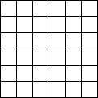
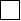
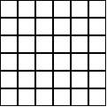

2.3 Image Guide
This section introduces the 2htdp/image library through a series of increasingly complex image constructions.
2.3.1 The nitty gritty of pixels, pens, and lines
The image library treats coordinates as if they are in the upper-left corner of each pixel, and infinitesimally small (unlike pixels which have some area).
Thus, when drawing a solid square of whose side-length is 10, the image library colors in all of the pixels enclosed by the square starting at the upper left corner of (0,0) and going down to the upper left corner of (10,10), so the pixel whose upper left at (9,9) is colored in, but the pixel at (10,10) is not. All told, 100 pixels get colored in, just as expected for a square with a side length of 10.
When drawing lines, however, things get a bit more complex. Specifically, imagine drawing the outline of that rectangle. Since the border is between the pixels, there really isn’t a natural pixel to draw to indicate the border. Accordingly, when drawing an outline square (without a pen specification, but just a color as the last argument), the image library uses a pen whose width is 1 pixel, but draws a line centered at the point (0.5,0.5) that goes down and around to the point (10.5,10.5). This means that the outline slightly exceeds the bounding box of the shape. Specifically, the upper and left-hand lines around the square are within the bounding box, but the lower and right-hand lines are just outside.
This kind of rectangle is useful when putting rectangles next to each other and avoiding extra thick lines on the interior. For example, consider building a grid like this:
> (let* ([s (rectangle 20 20 "outline" "black")] [r (beside s s s s s s)]) (above r r r r r r)) 
The reason interior lines in this grid are the same thickness as the lines around the edge is because the rectangles overlap with each other. That is, the upper-left rectangle’s right edge is right on top of the next rectangle’s left edge.
The special case of adding 0.5 to each coordinate when drawing the square applies to all outline polygon-based shapes that just pass color, but does not apply when a pen is passed as the last argument to create the shape. For example, if using a pen of thickness 2 to draw a rectangle, we get a shape that has a border drawing the row of pixels just inside and just outside the shape. One might imagine that a pen of thickness 1 would draw an outline around the shape with a 1 pixel thick line, but this would require 1/2 of each pixel to be illuminated, something that is not possible. Instead, the same pixels are lit up as with the 2 pixel wide pen, but with only 1/2 of the intensity of the color. So a 1 pixel wide black pen object draws a 2 pixel wide outline, but in gray.
When combining pens and cropping, we can make a rectangle that has a line that is one pixel wide, but where the line is drawn entirely within the rectangle. This rectangle has a two-pixel wide black pen, but we can crop out the outer portion of the pen.
> (crop 0 0 20 20 (rectangle 20 20 "outline" (make-pen "black" 2 "solid" "round" "round"))) 
Using that we can build a grid now too, but this grid has doubled lines on the interior.
> (let* ([s (crop 0 0 20 20 (rectangle 20 20 "outline" (make-pen "black" 2 "solid" "round" "round")))] [r (beside s s s s s s)]) (above r r r r r r)) 
While this kind of rectangle is not useful for building grids, it is important to be able to build rectangles whose drawing does not exceed its bounding box. Specifically, this kind of drawing is used by frame and empty-scene so that the extra drawn pixels are not lost if the image is later clipped to its bounding box.
When using image->color-list with outline shapes, the results can be surprising for the same reasons. For example, a 2x2 black, outline rectangle consists of nine black pixels, as discussed above, but since image->color-list only returns the pixels that are within the bounding box, we see only three black pixels and one white one.
> (image->color-list (rectangle 2 2 "outline" "black"))
(list
(color 0 0 0 255)
(color 0 0 0 255)
(color 0 0 0 255)
(color 255 255 255 0))
The black pixels are (most of) the upper and left edge of the outline shape, and the one white pixel is the pixel in the middle of the shape.